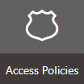
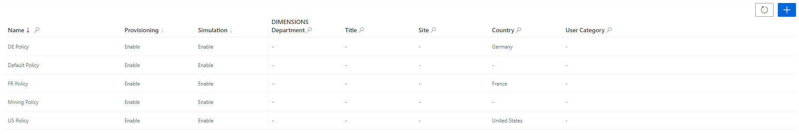
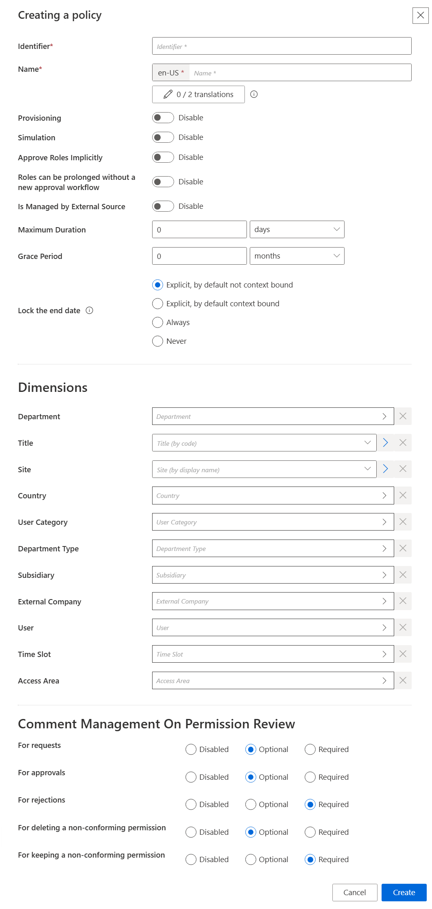

Create a Policy
How to define policies to organize roles and rules. See the Policy topic for additional information.
Overview
A policy is a subgroup of the role model. It defines an ensemble of roles and assignment rules that apply to specific identities. So policies are used to handle separately several sets of identities, based on dimensions with different permissions and workflows. See the Create Roles in the Role Catalog and Conforming Assignments topics for additional information.
Integrators must minimize the number of policies because it segments identities, and segmentation implies high maintenance. Netwrix recommends using one policy per population. A population is a group of people that can be managed following the same rules, role model, workflows, etc. This means, for example, one policy for workers (meaning employees and contractors), another one for partners, another one for clients. But sometimes partners are included in the same policy as workers, it depends on the organization.
NOTE: Netwrix Identity Manager (formerly Usercube) provides a default policy. Only when the project is mature enough should integrators think about creating additional policies.
Participants and Artifacts
Integrators must have the knowledge of the organization strategy towards identity management.
|
Input |
Output |
|---|---|
|
Resource type (optional) |
Policy |
See the Create a Resource Type topic for additional information.
Create a Policy
Create a policy by proceeding as follows:

Step 1 – Access the policies screen by clicking on Access Policies on the home page in the Configuration section.

Step 2 – Click on + New policy at the top right corner.

Step 3 – Fill in the information fields.
The UI elements are identified as follows:
- Identifier — Must be unique among policies and without any whitespace
- Name — Will be displayed in the UI to identify the resource type
- Provisioning — Allows provisioning for the policy
- Simulation — Allows simulation creation for the policy
- Approve Roles Implicitly — Can be enabled to bypass approval steps if the person who issues a given role request is also the role officer
- Roles can be prolonged without a new approval workflow — Enables the policy's roles and resource types to have their assignment's end dates postponed without any validation
- Is Managed by External Source — Can be enabled only during policy creation to indicate that its permissions are managed by another IGA tool and are to be ignored by Identity Manager's role model computation
- Maximum Duration — Duration (in minutes) after which the policy's roles and resource types will be automatically revoked, if no earlier end date is specified. It impacts only the roles and resource types which are manually assigned after the maximum duration is set. Pre-assigned items are not impacted.
- Grace Period — Duration (in minutes) for which a lost automatic role or resource type is prolonged. A review will be required to validate or decline the entitlement prolongation. Inferred entitlements won't be lost unless the end of the grace period is reached or the prolongation is declined.
-
Lock the end date — locks manual permission's at the end date
-
Explicit, by default not context bound — By default, the assignment's end date will not be context bound in order to encourage the manual entry of an end date
-
Explicit, by default context bound — By default, the assignment's end date will be context bound and therefore locked, but a manual date can be entered
-
Never — The assignment's end date will never be locked and needs to be specified manually
-
Always — The assignment's end date is always locked according to the applicable context rule
- Dimensions — Criteria that, if met, trigger the membership of given identities to the policy
-
NOTE: What we call another IGA tool can be another application or even another version of Identity Manager.
Step 4 – Click on Create.
Once you have completed the steps the policy is created.
Verify Policy Creation
In order to verify the process, check that the policy has been added with the right options to the list on the Access Policies page.